Costa Blanca · Algorfa
Properties for sale in La Finca Golf Resort, Algorfa
Villas, townhouses and apartments in one of the best-known golf resorts of the southern Costa Blanca, with a five-star hotel at its heart.
- 18properties for sale
- from €285,000for an apartment
- 18 holesby Pepe Gancedo
- about 20 minto Guardamar's beaches
For sale now
Properties for sale in La Finca Golf
Apartments and bungalows with a communal pool, semi-detached villas, and detached villas with a private pool, up to frontline villas on the course. Prices are as listed today; ask us for current availability.
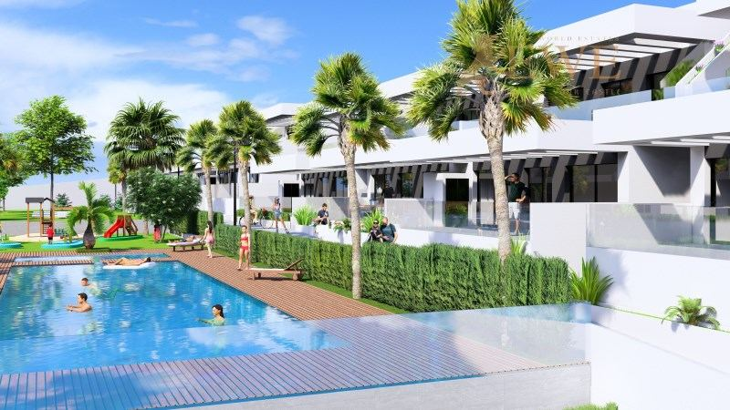
EWE3368Algorfa
Fully equipped flat next to the golf course in Algorfa
€285,000
2 bedrooms · 2 bathrooms · 67.25 m²Ref. EWE3368
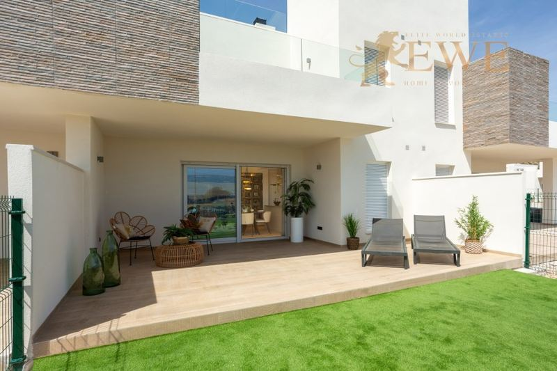
EWE2113Algorfa
Modern bungalows in La Finca Golf Algorfa
€318,000
2 bedrooms · 2 bathrooms · 70 m²Ref. EWE2113
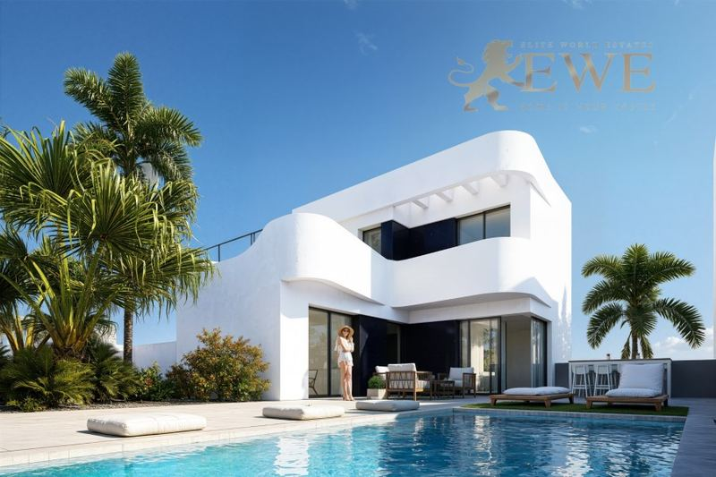
EWE3752Algorfa
Elegant New-Build Villas with Private Pool on Costa Blanca
€450,000
3 bedrooms · 2 bathrooms · 100 m²Ref. EWE3752
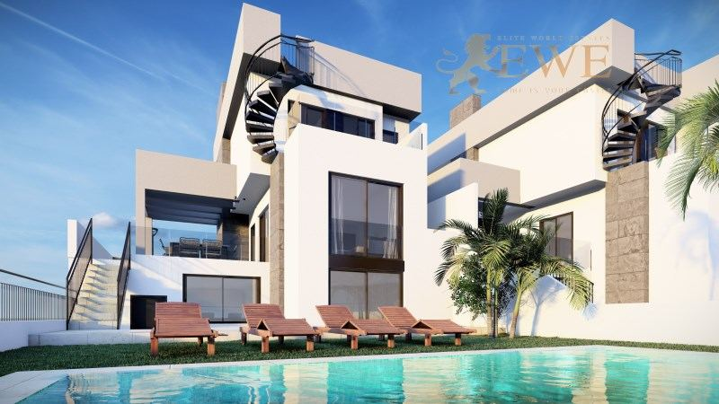
EWE2247Algorfa
Modern semi-detached house with Jacuzzi in La Finca Golf Resort in Algorfa
€465,000
2 bedrooms · 2 bathroomsRef. EWE2247
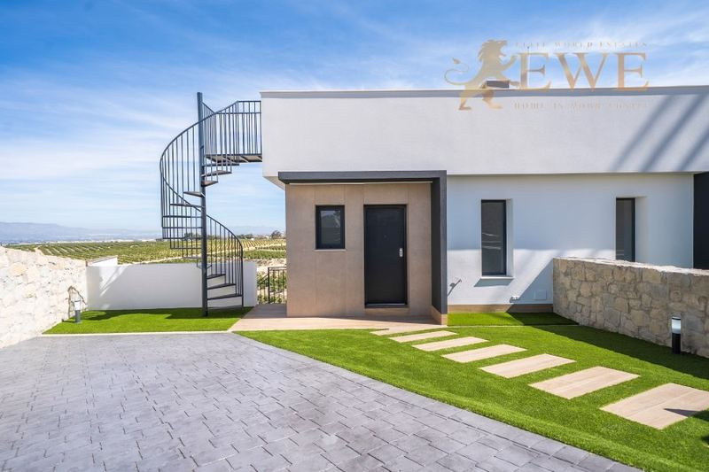
EWE3757Algorfa
Fully Furnished Semi-Detached Villa at La Finca Golf Resort
€473,000
3 bedrooms · 3 bathroomsRef. EWE3757
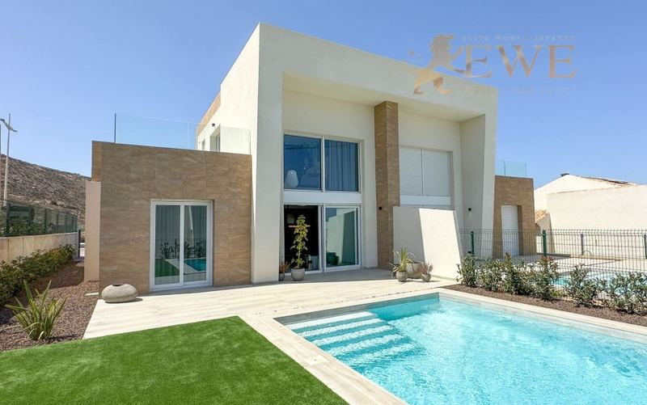
EWE2033Algorfa
Luxury semi-detached houses in La Finca, Algorfa
€475,000
3 bedrooms · 2 bathrooms · 108 m²Ref. EWE2033
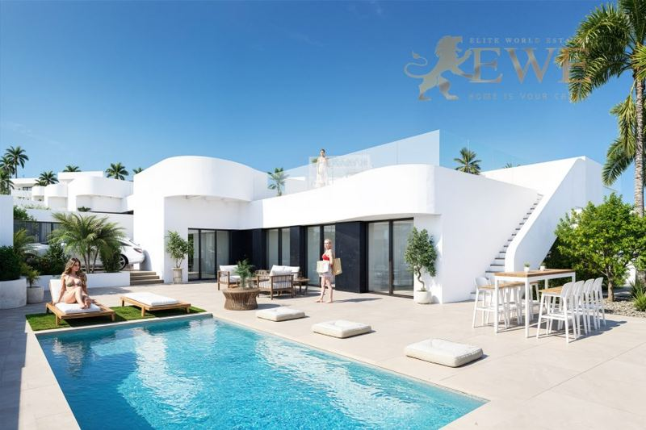
EWE3753Algorfa
Designer Villa with Private Pool at La Finca Golf
€475,000
3 bedrooms · 2 bathrooms · 112 m²Ref. EWE3753
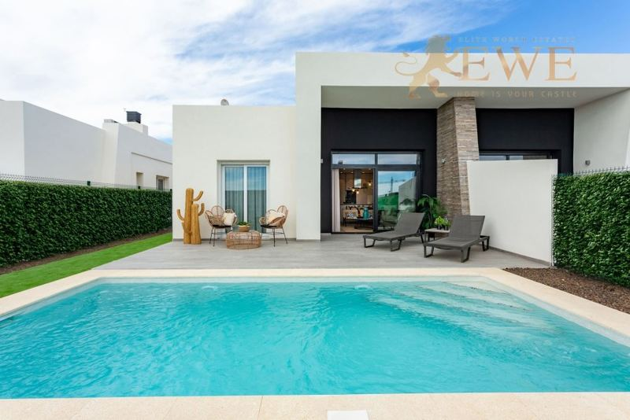
EWE1683Algorfa
Modern semi-detached villas in La Finca, Algorfa
€519,000
3 bedrooms · 2 bathrooms · 106 m²Ref. EWE1683
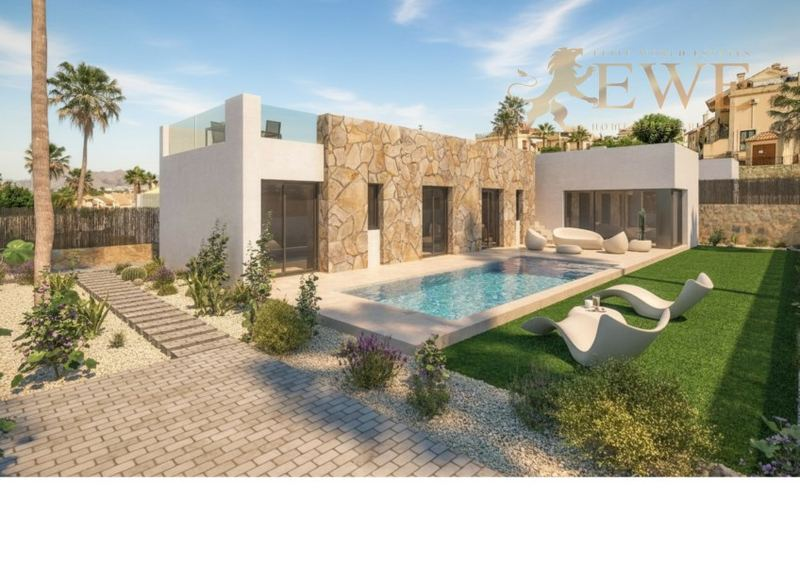
EWE3672Algorfa
Mediterranean villa near La Finca golf course in Algorfa
€579,000
3 bedrooms · 2 bathrooms · 120 m²Ref. EWE3672
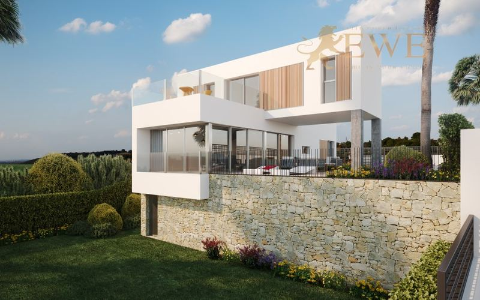
EWE1771Algorfa
Sophisticated villa overlooking the golf course in La Finca, Algorfa
€669,000
4 bedrooms · 3 bathrooms · 155.7 m²Ref. EWE1771
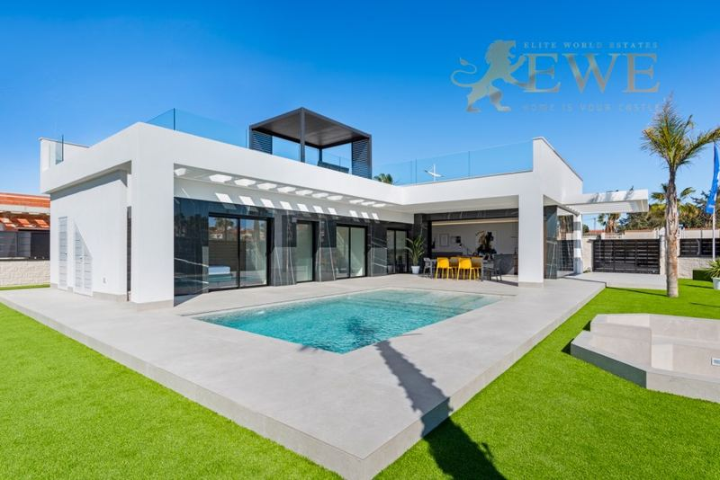
EWE2255Algorfa
Modern villa in La Finca Golf, Algorfa
€670,000
3 bedrooms · 2 bathrooms · 100 m²Ref. EWE2255
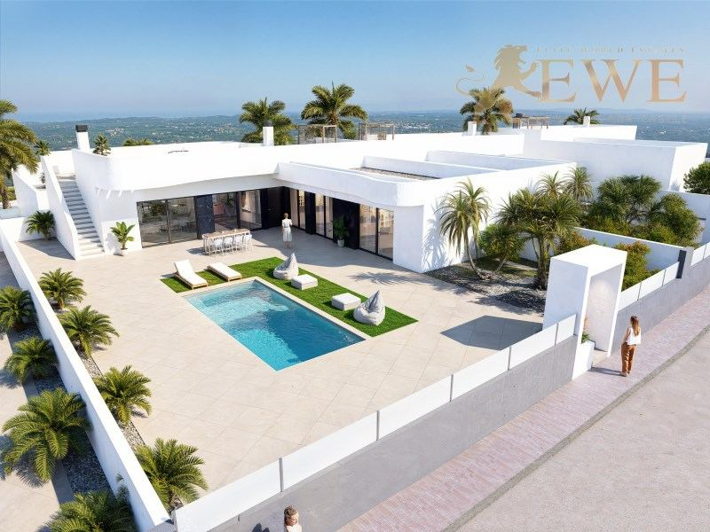
EWE3754Algorfa
Modern Villa with Private Pool and Large Plot Near La Finca Golf Resort, Algorfa
€675,000
3 bedrooms · 3 bathroomsRef. EWE3754
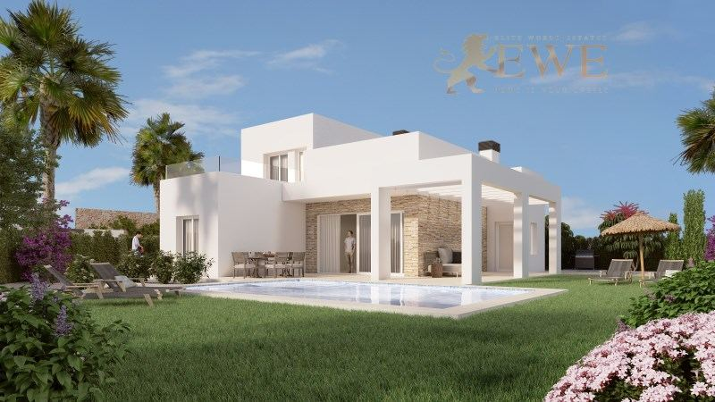
EWE2030Algorfa
Luxury villa in La Finca Golf Golf Algorfa
€779,000
3 bedrooms · 3 bathrooms · 133 m²Ref. EWE2030
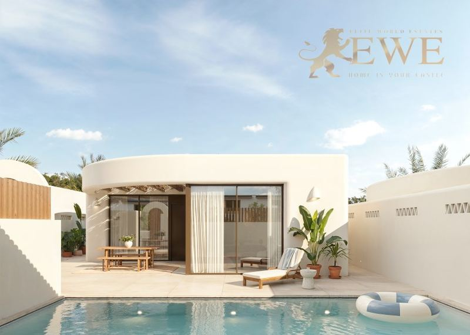
EWE3604Algorfa
Mediterranean villa with a swimming pool in a picturesque area in Algorfa
€795,000
3 bedrooms · 3 bathrooms · 150 m²Ref. EWE3604
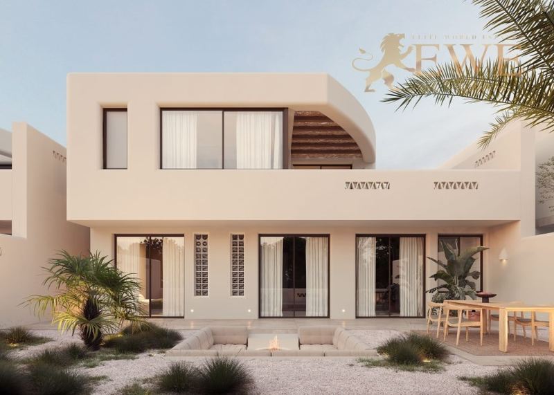
EWE3660Algorfa
Modern villa with swimming pool for sale in Algorfa.
€840,000
4 bedrooms · 4 bathrooms · 345 m²Ref. EWE3660
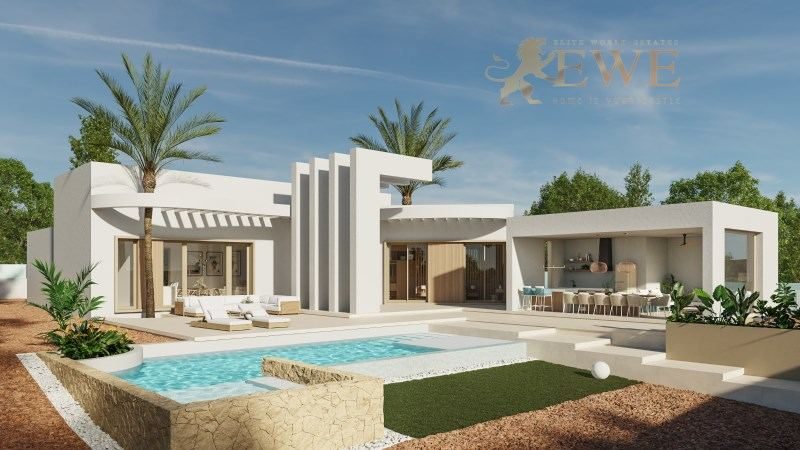
EWE3606Algorfa
Elegant villa with swimming pool La Finca Golf, Algorfa
€995,000
4 bedrooms · 4 bathrooms · 200 m²Ref. EWE3606
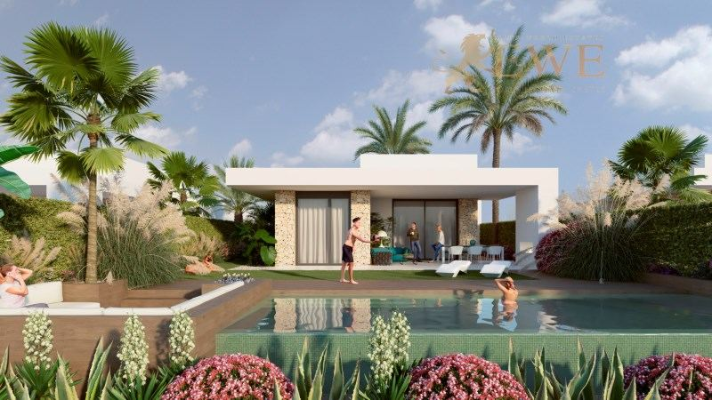
EWE3740Algorfa
Frontline Villa at the Prestigious La Finca Golf Resort
€1,600,000
3 bedrooms · 2 bathrooms · 139 m²Ref. EWE3740
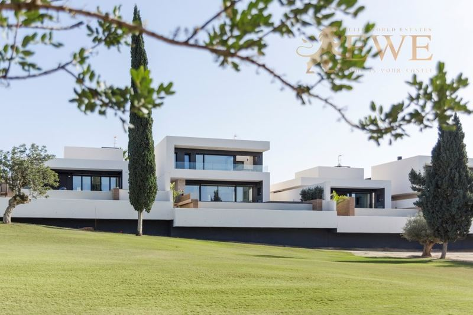
EWE3741Algorfa
Exclusive Villa at the Prestigious La Finca Golf Resort
€1,800,000
3 bedrooms · 3 bathrooms · 139 m²Ref. EWE3741
The course
Golf at La Finca Golf Resort
La Finca's 18-hole course was designed by Pepe Gancedo. It has generous fairways, unusual greens such as the square green on the 7th, plenty of bunkers, and lakes and waterfalls along the way.
Golfers have a driving range, putting greens, a chipping area, a practice bunker, a golf academy, a pro shop and a clubhouse. The same company also runs Villamartín Golf, another established course on the Costa Blanca.
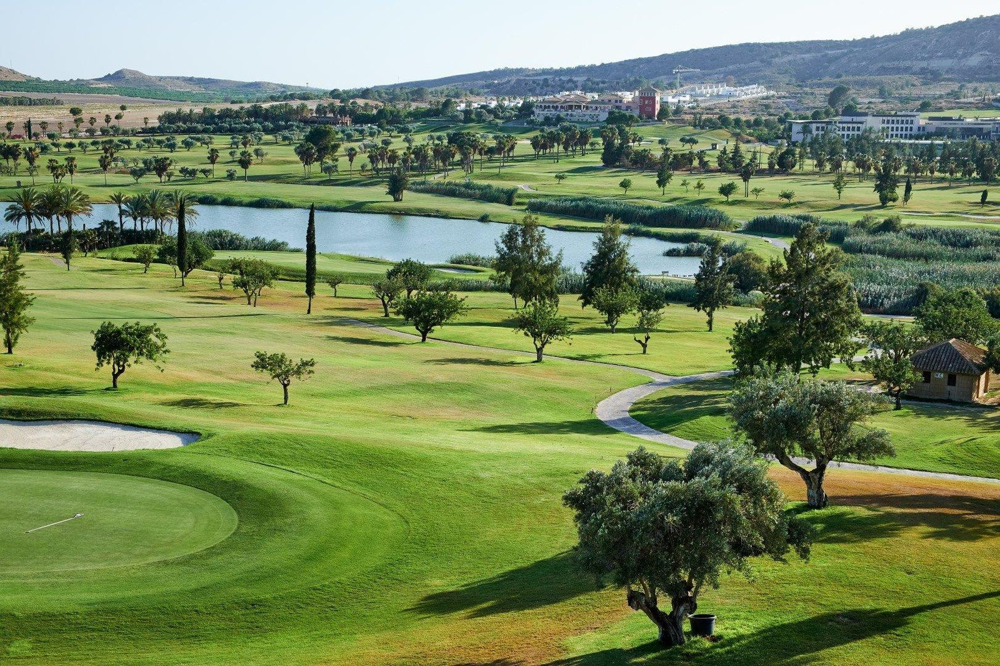
Living here
Why buy a property at La Finca Golf?
At the centre of the resort is the five-star La Finca Resort hotel, with a spa, pool, gym, tennis and padel courts. Owners also have several restaurants and bars inside the resort, so daily life does not depend on the car.
Algorfa is a quiet inland village, but the coast is close: the beaches of Guardamar del Segura are about 20 minutes away, Torrevieja about 25 minutes and Alicante-Elche airport about 40–45 minutes.
Budget
What it costs to buy at La Finca Golf
On top of the price you pay tax and fees. New builds pay VAT and stamp duty, resale homes pay transfer tax. Always ask us for the exact figure for the home you like.
| New build | 10% VAT (IVA) + 1.4% stamp duty (AJD) |
|---|---|
| Resale home | 9% transfer tax (ITP), 11% above €1 million |
| Notary, registry, lawyer | about 1.5–2.5% of the price |
| Every year | IBI property tax, community fees and, if you play, golf membership |
Questions
La Finca Golf: questions and answers
How much does a property cost in La Finca?
Our properties in La Finca start at €285,000 for an apartment. Semi-detached villas cost from about €465,000, detached villas from about €450,000 to €1 million, and frontline villas on the course up to about €1.8 million.
Where is La Finca Golf?
In Algorfa, in the south of the province of Alicante. Guardamar's beaches are about 20 minutes by car, Torrevieja about 25 minutes and Alicante-Elche airport about 40–45 minutes.
What costs are there on top of the price?
For a new build you pay 10% VAT and 1.4% stamp duty. For a resale home you pay 9% transfer tax (11% above €1 million). Add about 1.5–2.5% for the notary, land registry and lawyer. We give you the exact figure for the home you like.
More golf on the Costa Blanca
Other golf resorts
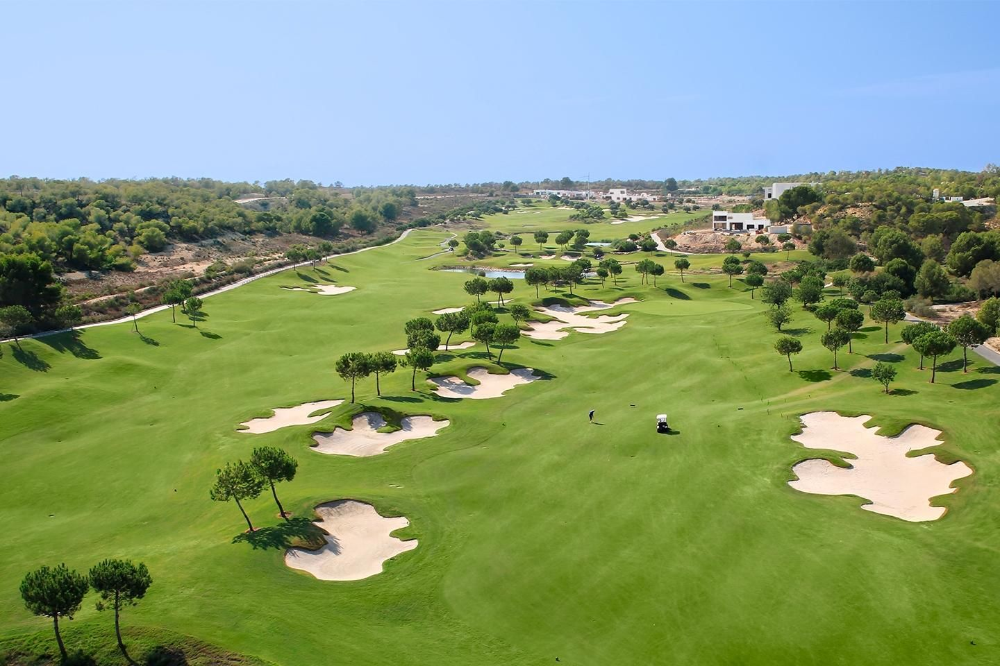
Orihuela Costa · 12 propertiesLas Colinas Golf
Award-winning, low-density resort in a green valley behind Campoamor.
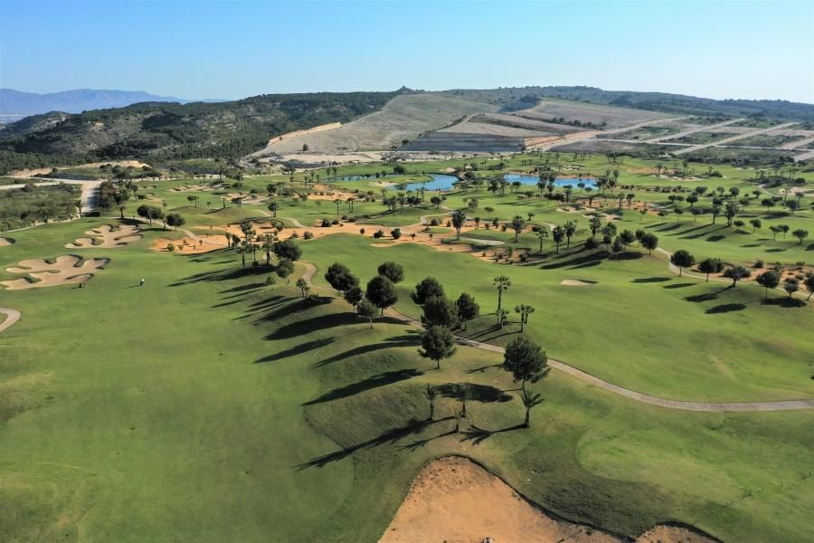
Orihuela Costa · 7 propertiesVistabella Golf
Relaxed golf community with good value villas and townhouses.
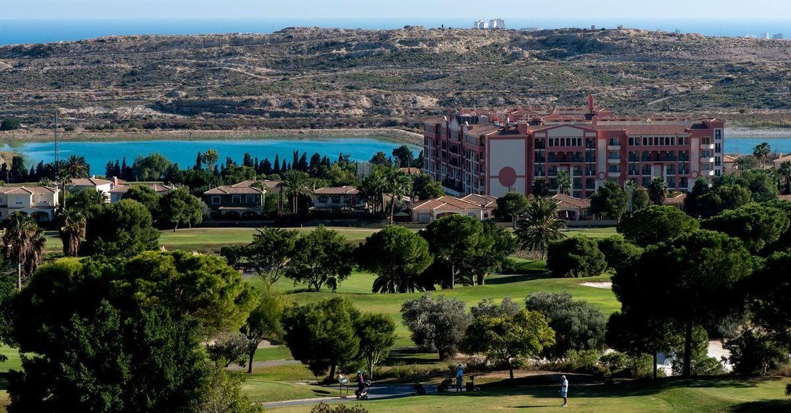
Mutxamel · 5 propertiesBonalba Golf
Golf close to Alicante city, with beaches 10–15 minutes away.
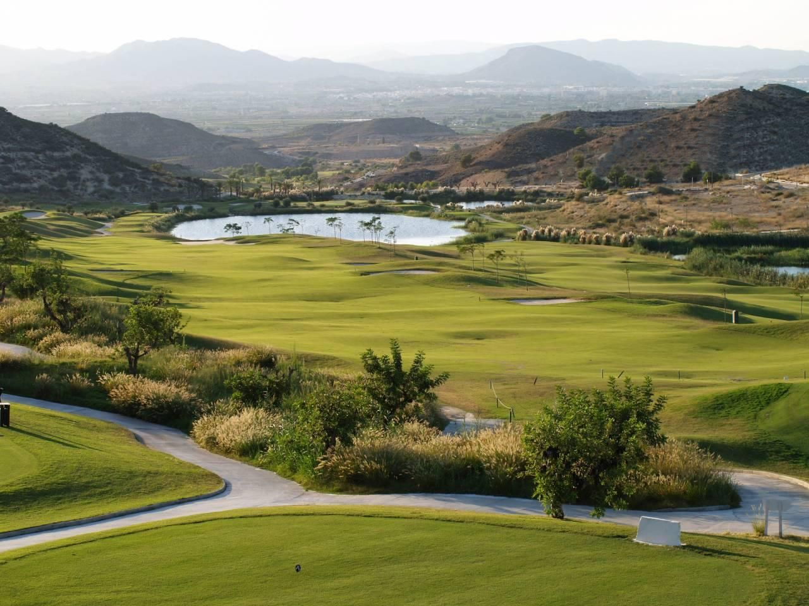
Monforte del Cid · 4 propertiesFont del Llop Golf
New-build golf resort a few minutes from Alicante airport.
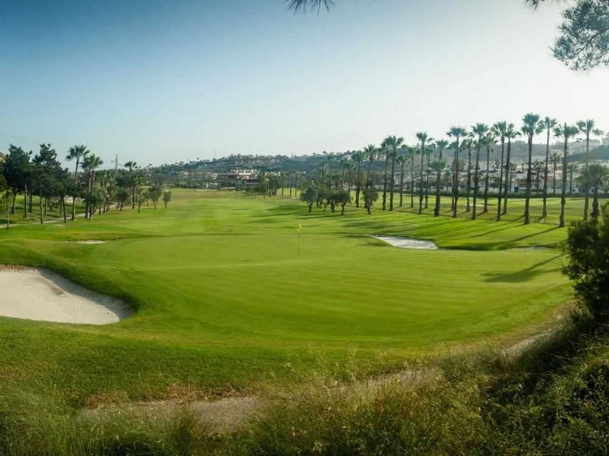
Ciudad Quesada · 20 propertiesLa Marquesa Golf
Classic course inside Ciudad Quesada, about 6 km from Guardamar's beaches.
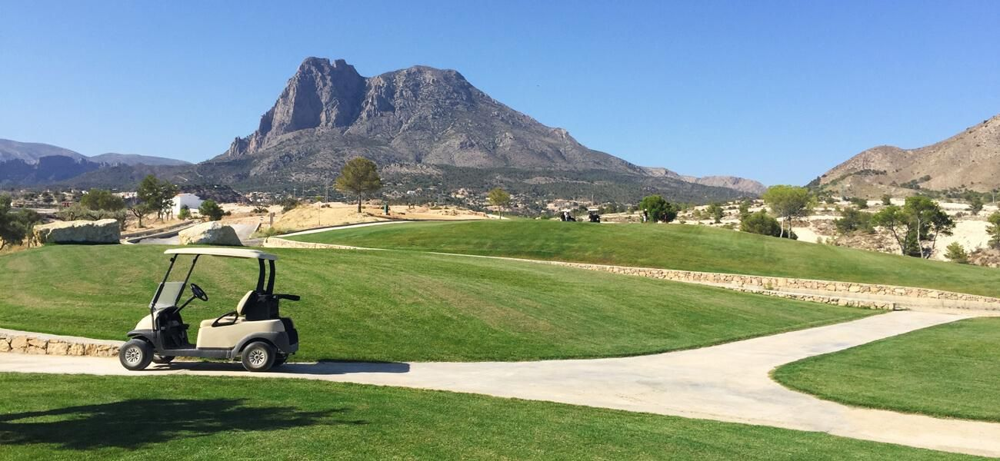
Finestrat · 8 propertiesPuig Campana Golf
Nine holes below the mountain, ten minutes from Benidorm's beaches.
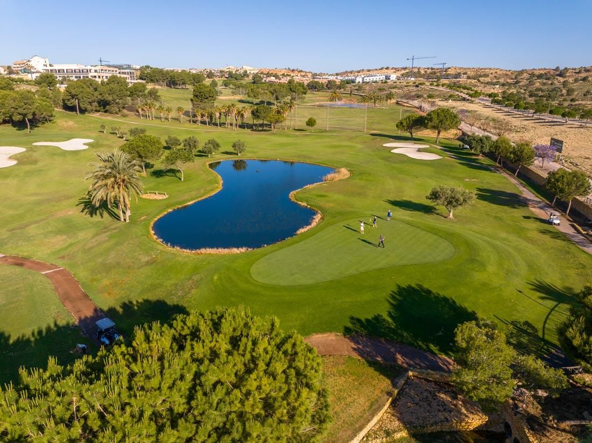
Monforte del Cid · 5 nearbyAlenda Golf
Established community with an international school, between Alicante and Elche.

Looking for a golf home at La Finca Golf?
Tell us your budget and what you need. We reply within one working day, in English, German, Spanish or Polish.